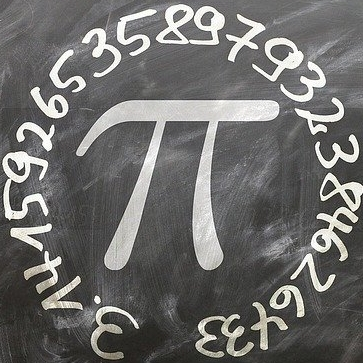
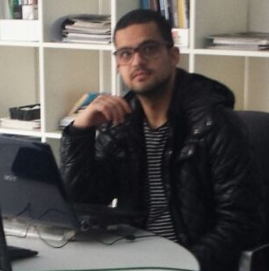

Home
Home Competenze
CompetenzeBIO
» Infanzia e Adolescenza
Sono Stefano Lodico, sono nato e cresciuto a Canicattì, una cittadina siciliana della provincia di Agrigento. Sono sempre stato una
persona curiosa e affascinata da quante cose questo mondo ha da insegnare, infatti fin da piccolissimo mi chiedevo come funzionasse
ogni cosa, dalla natura, alla scienza, agli oggetti di uso comune ecc. Grazie a questa mia enorme curiosità da piccolo mi informavo
su ogni cosa, inizialmente ero affascinato dalla storia dell'antico Egitto arrivando al punto di voler perfino imparare il geroglifico,
poi la mia passione si è spostata verso l'astronomia, puntando tutte le mie energie a voler imparare di più per poter
capire l'universo, tanto che mi impegnavo a studiare (ovviamente in modo superficiale) perfino la relatività di Einstein (tra le altre cose)
per poter capire il funzionamento dei buchi neri e della loro distorsione spazio-temporale.
 In parallelo all'astronomia all'età di 9 anni misi la prima volta le mani su un computer e da allora la mia curiosità mi spingeva ad impegnarmi
per conoscerlo meglio (infatti all'età di 11/12 anni mi iscrissi ad un corso per prendere il certificato ECDL, superando
tutti gli esami), volendo conoscere ogni applicativo e ol loro funzionamento, provando e impegnandomi a fondo per riuscire a capire il meccanismo
di ogni elemento.
In parallelo all'astronomia all'età di 9 anni misi la prima volta le mani su un computer e da allora la mia curiosità mi spingeva ad impegnarmi
per conoscerlo meglio (infatti all'età di 11/12 anni mi iscrissi ad un corso per prendere il certificato ECDL, superando
tutti gli esami), volendo conoscere ogni applicativo e ol loro funzionamento, provando e impegnandomi a fondo per riuscire a capire il meccanismo
di ogni elemento.
» Durante il liceo
 All'età di 13 anni dovetti cominciare con le prime scelte determinanti: Galileo Galilei sosteneva che la matematica è il linguaggio con cui si esprime la natura, quindi, vista la mia passione per il mondo tecnico-scientifico, quale migliore scelta di una scuola dove approfondisce (tra le tante materie) proprio la matematica? Scelsi così di frequentare il Liceo Scientifico Antonino Sciascia (il liceo della mia città). Durante le esperienze liceali, provavo sempre ad imparare qualcosa di nuovo, infatti un giorno decisi di voler provare nuovi sistemi operativi: scoprii Linux e le sue distro e installai la mia prima distribuzione Linux (Ubuntu 9.04), da quel momento sono rimasto sempre legato al mondo Linux (fino ad ora che come unico sistema operativo uso Arch Linux).
» Università
Nel frattempo arrivò la maturità e dovetti scegliere cosa fare, essendo che la passione per l'astronomia se ne era un po andata, dopo varie scelsi di entrare ufficialmente a far parte del mondo informatico iscrivendomi al corso universitario denominato "Ingegneria Gestionale e informatica" (si tratta di una fusione dei due corsi di laurea, dove al secondo anno si doveva scegliere il profilo di specializzazione tra gestionale e informatico dando però ad entrambi nozioni "dell'altro profilo", com'è facile intuire io scelsi il profilo informatico). All'università partecipai anche ad un paio di progetti interessanti, richiesti dai professori per le materie: per esempio partecipai in un team dove lo scopo era sviluppare un portale universitario  per studenti e docenti che consentisse ogni funzione universitaria (sfruttando UML), oppure con altri colleghi formammo un team per un progetto per lo sviluppo di un prodotto (con interviste ai clienti ecc.). Inoltre vi erano 3 crediti da "riempire" o con alcuni convegni oppure con un tirocinio, io scelsi il tirocinio presso un'azienda di videosorveglianza, era di sole 75 ore, quindi non imparai molto, ma fu un'esperienza molto interessante, perchè parlavo con gli ingegneri che mi seguivano, spiegandomi la loro scelta di fare questo lavoro, come lavorano, come funziona il loro ufficio ecc. quindi fu un occasione per cominciare a "respirare" l'ambiente lavorativo.
» Avventura in Germania
La foto qui mostrata rappresenta il simbolo di Remscheid, un comune tedesco di 100 mila abitanti, dove, finito il corso di laurea, decisi di voler fare un'esperienza, quindi con tanta grinta dentro andai in Germania. Lì è stata una bellissima esperienza di vita entrando in contatto con una cultura completamente diversa dalla mia, insegnandomi quindi molto (la mia curiosità mi ha portato a riflettere tanto per capire il loro modo di pensare, per provare anche ad integrarmi), entrai in un'associazione italo-tedesca che mi fornì un corso di tedesco (livello A1), la possibilità di conoscere persone e di partecipare anche ad alcuni eventi molto interessanti.
» Sicilia, terra mia!
Abitando in un paese straniero però, il sentimento patriottico si fa sentire, quindi, dopo tante riflessioni, decisi di tornare in Sicilia per provare a crearmi un futuro nel mio paese (inizialmente iscrivendomi nuovamente all'università di Palermo, poi cercando lavoro per potermi mantenere). La Sicilia è la mia terra, con i suoi pro e contro, è il paese che amo, che mi ha insegnato tanto e ha contribuito anche a farmi diventare chi sono oggi, ma purtroppo offre poche opportunità lavorative, inoltre a causa della pandemia di covid-19, le opportunità si sono ridotte in modo significativo, rendendomi (purtroppo) disoccupato dall'inizio della pandemia.
» Durante la pandemia
Nel frattempo (durante la mia quarantena perchè risultai positivo al covid-19) il 23 novembre 2020 superai l'esame di abilitazione alla professione di
Ingegnere dell'Informazione (sezione B), divenendo quindi un'ingegnere a tutti gli effetti. Inoltre, non volendo stare fermo,
ho voluto continuare a studiare (anche se da "privato/autodidatta"), per imparare sempre più cose, infatti ho creato un account su
 GitHub,
per cominciare a osservare, imparare, studiare e se possibile contribuire allo sviluppo di vari progetti.
GitHub,
per cominciare a osservare, imparare, studiare e se possibile contribuire allo sviluppo di vari progetti.